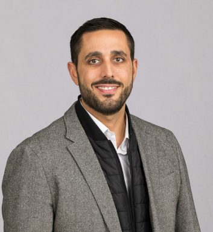
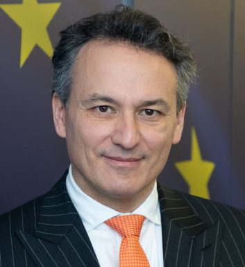
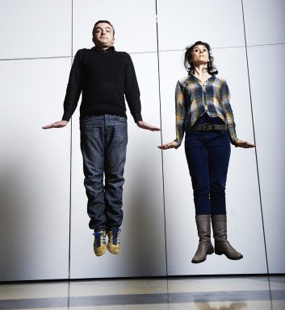

15 500+
Expertes, experts
Édition 2025 • Auvergne-Rhône-Alpes × Québec
Pendant les EJC, des expertes et experts de tous horizons collaborent, partagent leurs savoirs et transforment des idées en actions concrètes.

Si vous souhaitez participer à la réflexion et à l'action pour une société plus innovante et responsable, les Entretiens Jacques Cartier constituent un rendez-vous incontournable.
15 500+
Expertes, experts
82 000+
Participantes, participants
1 200+
Évènements

C'est en mêlant les savoirs et les expériences des mondes économique, académique, institutionnel, culturel et scientifique que nous pouvons, ensemble, améliorer et faire évoluer la société.
Les EJC sont organisés par le Centre Jacques Cartier et co-portés par un réseau de partenaires des deux côtés de l'Atlantique.
Visiter le Centre Jacques Cartier


Vice-président, Finances et administration

Présidente, PULSALYS

Directeur des opérations, Lyonbiopôle

PDG, CIRANO

Union Européenne
Doctorante, Université d'Ottawa
Chaire d'excellence Une seule santé urbaine

Chef de projet, Biennale de la Danse